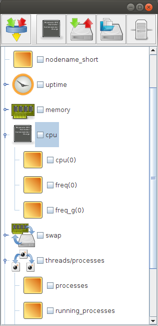

Conky Remote Manager
Wie in einem vorhergehenden Artikel beschrieben, ist es sehr einfach möglich, Conky als Diagnosetool für Rechnergesundheit einzusetzen, wenn man auf die unmittelbare graphische Aufbereitung der Daten durch Conky selbst verzichtet.
Es ist allerdings mühsam, eine Conky-Konfiguration von Hand zusammenzustellen. Außerdem sorgt die Entscheidung Conky als JSON-Generator zu benutzen dafür, daß nicht mehr so eine ausufernde Menge an Optionen für die Konfigurationsdatei übrigbleiben.
Daher habe ich versucht, einen Editor/Manager für Conky zu schaffen, der es erlaubt, maßgeschneiderte Konfigurationen per Maus zusammenzuklicken. Ich griff dafür auf den in einem früheren Artikel vorgestellten JTree zur Auswahl von m aus n Möglichkeiten zurück und erweiterte diesen wo notwendig.
Damit erhielt ich einen Editor, in dem die einzelnen Blätter des Baumes für Informationen stehen, die Conky liefern soll. Dabei gibt es Besonderheiten: Konfigurationsoptionen, die mehrfach auftreten können und durch einen numerischen Index unterschieden werden - wie etwa Informationen über die verschiedenen CPUs des Systems, sind initial nur einmal im Baum vertreten, können aber per Mausklick hinzugefügt werden. Dabei wird für jedes neue Element der Index automatisch erhöht. Wünscht mal also Informationen zur CPU Nummer 6, muß man 6 CPU-Elemente hinzufügen (die Zählung beginnt bei 0 und das Element mit diesem Index ist bereits im Baum enthalten). Konfigurationsoptionen, die mehrfach auftreten können, aber nicht durch einen Index, sondern durch einen amen unterschieden werden, kann man ebenfalls durch Klick mit der Maus hinzufügen. Bei diesen Elementen ist es So., daß sie mit einem Default-Namen hinzhugefügt werden, der durch Dreifachklick editiert werden kann. Beispiele für solche Konfigurationsoptionen sind Angaben zu Dateisystemen oder Netzwerkgeräten. Hier ein Screenshot der Anwendung:

Screenshot mit Beispiel zum Aussehen des Conky Remote ManagerArtikel, die hierher verlinken
Icons für Conky
17.07.2014
Hin und wieder kommt es vor, daß ich feststelle, daß mir Icons für Knöpfe in meinen Programmen fehlen. Meistens kann ich mir dann damit helfen, daß ich aus dem umfangreichen Fundus, der sich bereits im Laufe der Zeit bei mir angesammelt hat, Teile auswähle und neu kombiniere.


Vor 5 Jahren hier im Blog
-
Synology-NAS als Festplattenrekorder
19.03.2016
Nachdem ich eigentlich recht zufrieden mit meinem Synology-NAS bin, hat mich neulich wieder dieses Nerd-Jucken erwischt: Wir können einfach nichts in Ruhe lassen, das funktioniert. Daher nahm ich mir vor, mein Haus mit der Möglichkeit auszustatten, zeitgesteuerte Fernsehmitschnitte anzufertigen - natürlich ohne den Kauf eines entsprechenden fertigen Geräts...
Weiterlesen...
Tags
Android Basteln C und C++ Chaos Datenbanken Docker dWb+ ESP Wifi Garten Geo Git(lab|hub) Go GUI Hardware Java Jupyter Komponenten Links Linux Markup Music Numerik PKI-X.509-CA Python QBrowser Rants Raspi Revisited Security Software-Test sQLshell TeleGrafana Verschiedenes Video Virtualisierung Windows Upcoming...
Neueste Artikel
-
 Spielen mit Perspektive - Ellipsen
Spielen mit Perspektive - Ellipsen
Nach meinen letzten zaghaften Versuchen, per Computer dekorative Dinge zu schaffen habe ich mich ein wenig weiter in die Mathematik eingegraben und überlegt, ob ich statt der Rechtecke auch andere Formen in dieser Weise darstellen könnte...
Weiterlesen... -
Java Collections und Slices
Ich hatte neulich einen Fall, in dem ich nicht nur über die Elemente einer Liste iterieren wollte, sondern über einen Satz von jeweils drei benachbarten Elementen (Element und sein Nachfolger/Vorgänger)
Weiterlesen... -
Spielen mit Perspektive
Und wieder habe ich mich mit einer netten kleinen Spielerei beschäftigt, aus der man hübsche Bilderchen erzeugen kann...
Weiterlesen...
Manche nennen es Blog, manche Web-Seite - ich schreibe hier hin und wieder über meine Erlebnisse, Rückschläge und Erleuchtungen bei meinen Hobbies.
Wer daran teilhaben und eventuell sogar davon profitieren möchte, muß damit leben, daß ich hin und wieder kleine Ausflüge in Bereiche mache, die nichts mit IT, Administration oder Softwareentwicklung zu tun haben.
Ich wünsche allen Lesern viel Spaß und hin und wieder einen kleinen AHA!-Effekt...
PS: Meine öffentlichen GitHub-Repositories findet man hier.